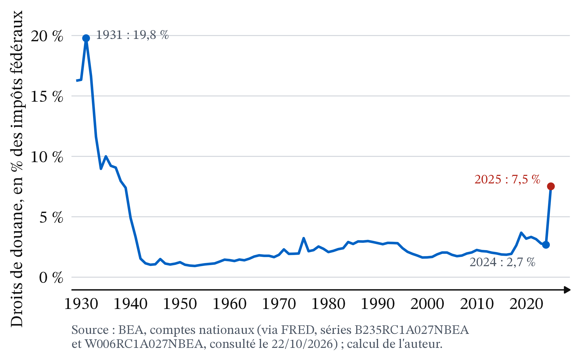
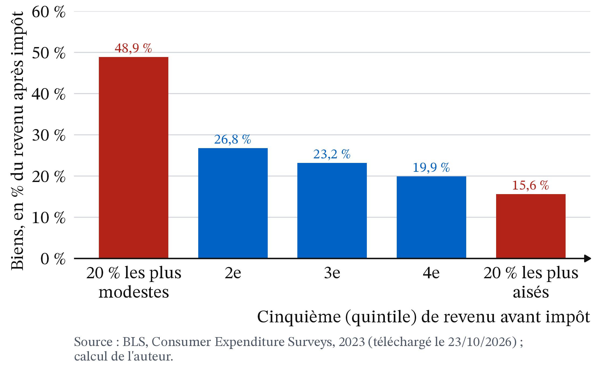
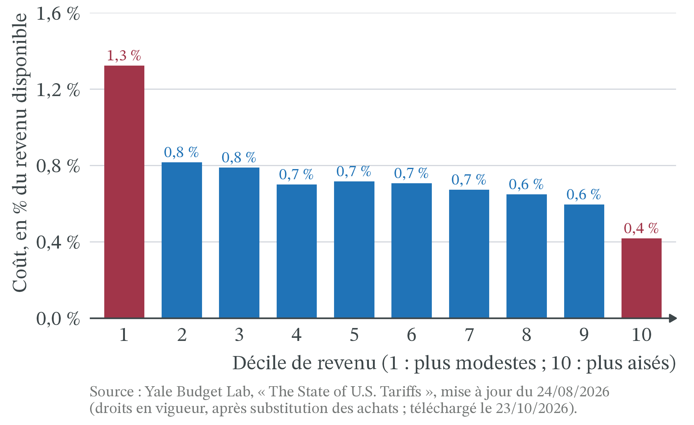

.jpg){kind=link}

À quoi servent les droits de douane ?
CM 9 · Partie II · La monnaie, l’État, le monde
Avantage comparatif, tarif douanier, chaînes de valeur.
- Coût d’opportunité : ce à quoi on renonce pour obtenir quelque chose. Une heure passée à produire du blé est une heure qui ne produit pas de vêtements.
- Surplus : le surplus du consommateur est l’écart entre ce qu’un acheteur était prêt à payer et le prix qu’il paie ; le surplus du producteur, l’écart entre le prix reçu et le coût marginal (Cm). Sur un graphique, ce sont des aires entre les courbes et la droite de prix (CM 4).
- Perte sèche (CM 4) : surplus perdu par rapport à la meilleure quantité (échanges qui n’ont plus lieu, ou production plus coûteuse que l’importation).
- Incidence d’une taxe : celui qui verse la taxe à l’État n’est pas forcément celui qui la supporte. Tout dépend de la réaction des prix et des quantités (CM 2).
- Importations et exportations : achats de biens à l’étranger et ventes à l’étranger. Le solde commercial est la différence entre les deux.
1 La question
Le 2 avril 2025, que l’administration américaine baptise « Jour de la libération » (Figure 1), les États-Unis relèvent leurs droits de douane sur presque tous leurs partenaires. Le droit de douane moyen américain passe de 4,9 % en janvier 2025 à 24,2 % ce jour-là. En février 2026, il est encore d’environ 15 %, trois fois son niveau de départ (H. Guimbard, CEPII, The Conversation, 22/07/2026).
Mesuré autrement, par les droits effectivement perçus rapportés à la valeur des biens importés, le droit américain passe de 2,6 % en 2024 à 8,0 % en 2025 : il triple, et atteint son niveau le plus élevé depuis 1946, sans approcher le pic de 1933, 18,7 % (Figure 2 ; calcul de l’auteur). Ce droit effectif reste inférieur au droit moyen, parce que les achats se détournent des produits les plus taxés : l’écart entre les deux mesures est lui-même un effet du droit.
L’argent rentre. Les douanes américaines encaissaient 7,9 milliards de dollars (Md$) en octobre 2024 ; elles en encaissent 33,1 Md$ en octobre 2025. Sur l’exercice budgétaire 2026 (octobre 2025 à septembre 2026), les recettes douanières brutes atteignent 317,8 Md$, contre 202,4 Md$ l’exercice précédent, soit +57 % (Trésor des États-Unis, Monthly Treasury Statement, téléchargé le 21/10/2026 ; calcul de l’auteur).
Deux questions se posent.
- Un droit de douane est versé à la frontière par l’importateur. Mais qui le paie vraiment : l’exportateur étranger, l’importateur, le consommateur ?
- Les économistes répètent depuis deux siècles que l’échange enrichit les deux partenaires. Pourquoi un pays taxerait-il alors ses propres achats ?
La question de la séance : à quoi servent les droits de douane ? Un gouvernement qui les relève leur donne des objectifs : procurer des recettes à l’État, protéger une industrie naissante ou en difficulté, peser dans une négociation commerciale, réduire la dépendance envers un fournisseur étranger (la sécurité économique, la souveraineté), ou encore, avec le mécanisme d’ajustement carbone aux frontières (MACF) européen, faire payer le carbone importé. On confronte ces objectifs affichés à ce que les droits coûtent, et à qui. Deux outils le mesurent : l’avantage comparatif, qui dit d’où viennent les gains de l’échange, et l’analyse d’un droit de douane en surplus, qui dit qui paie le droit, qui en profite et ce qui est perdu pour tous. Savoir si un objectif vaut ce qu’il coûte relève d’un jugement : la controverse expose les positions sans trancher. Cette séance est la dernière du programme du CC2 ; elle n’a pas de TD et n’est évaluée que dans la partie cours.
2 Apports théoriques
2.1 L’échange enrichit même le pays le moins productif
 1821 · Thomas Phillips, domaine public, Wikimedia Commons
1821 · Thomas Phillips, domaine public, Wikimedia Commons
David Ricardo (1817), On the Principles of Political Economy and Taxation, Londres, John Murray, chap. 7 · école classique. Un pays gagne à se spécialiser dans les biens où son désavantage est le plus faible, même s’il est moins productif que son partenaire pour tous les biens. Ce qui compte n’est pas la productivité comparée des pays, mais le coût d’un bien mesuré en l’autre bien, à l’intérieur de chaque pays.
Définition 1 (Avantage absolu, avantage comparatif) Un pays a un avantage absolu dans un bien s’il le produit avec moins de travail que son partenaire. Il a un avantage comparatif dans un bien si son coût d’opportunité y est plus faible : il renonce à moins d’autres biens pour en produire une unité. Un pays peut n’avoir aucun avantage absolu ; il a toujours un avantage comparatif dès que ses coûts d’opportunité diffèrent de ceux de son partenaire.
Une avocate tape plus vite que son assistant ; elle a pourtant intérêt à lui confier la frappe. Chaque heure qu’elle y passerait est une heure de plaidoirie perdue, beaucoup plus coûteuse. Le gain de l’échange vient des écarts de coûts d’opportunité, pas des écarts de productivité.
2.2 L’ouverture fait des gagnants et des perdants à l’intérieur de chaque pays
 Eli Heckscher · photographe inconnu, domaine public, Wikimedia Commons
Eli Heckscher · photographe inconnu, domaine public, Wikimedia Commons
 1950 · photographe inconnu, CC BY-SA 4.0, redimensionné, Wikimedia Commons
1950 · photographe inconnu, CC BY-SA 4.0, redimensionné, Wikimedia Commons
Eli Heckscher (1919), « Utrikeshandelns verkan på inkomstfördelningen », Ekonomisk Tidskrift, et Bertil Ohlin (1933), Interregional and International Trade, Harvard University Press · école néoclassique. Un pays exporte les biens qui utilisent beaucoup le facteur de production dont il est bien doté (travail qualifié, terres, capital) et importe ceux qui utilisent le facteur qui lui manque. Wolfgang Stolper et Paul Samuelson en tirent la conséquence (1941, « Protection and Real Wages ») : l’ouverture enrichit les détenteurs du facteur abondant et appauvrit ceux du facteur rare.
Ricardo dit que le pays gagne ; Heckscher et Ohlin, que tous ses habitants ne gagnent pas. Dans un pays riche en travail qualifié, l’ouverture profite aux ingénieurs et pèse sur les ouvriers, d’abord dans les industries concurrencées. Un droit de douane, de même, déplace des gains et des pertes entre des groupes.
2.3 Un droit de douane est une taxe sur un bien importé
Définition 2 (Droit de douane) Un droit de douane (ou tarif douanier) est une taxe prélevée sur un bien importé, au passage de la frontière. Il est ad valorem quand il représente un pourcentage de la valeur du bien (15 %), spécifique quand c’est un montant par unité, noté t (10 € par tee-shirt). Le droit NPF (« nation la plus favorisée ») est le droit de base qu’un membre de l’Organisation mondiale du commerce (OMC) applique à tous ses partenaires, sauf accord particulier.
Définition 3 (Petit pays, prix mondial) Un pays est petit sur un marché quand ses achats sont trop faibles pour modifier le prix mondial, noté Pw. Il prend ce prix comme donné : sans droit de douane, le prix intérieur est égal à Pw ; avec un droit t, il devient Pw + t. Un grand pays, au contraire, achète assez pour que ses décisions fassent bouger le prix que fixent les exportateurs.
Sur un bien importé, un droit de douane fonctionne comme n’importe quelle taxe : « qui le paie ? » est une question d’incidence, qui ne se règle pas en regardant qui remplit la déclaration en douane.
3 Les outils
3.1 Se spécialiser puis échanger donne plus de chaque bien
![Deux graphiques côte à côte, vêtements en abscisse et blé en ordonnée. À gauche, pays A : frontière de production allant de 60 tonnes de blé à 30 lots de vêtements ; le point d'autarcie est à 15 lots et 30 tonnes ; une flèche bleue mène au point avec échange, 20 lots et 40 tonnes, au-dessus de la frontière. À droite, pays B : frontière allant de 20 tonnes de blé à 40 lots ; autarcie à 20 lots et 10 tonnes ; une flèche verticale mène au point avec échange, 20 lots et 20 tonnes, au-dessus de la frontière.](cm9_files/figure-html/fig-ricardo-1.png)
Exemple 1 (Deux pays, deux biens, un avantage comparatif) Deux pays fictifs produisent du blé (en tonnes) et des vêtements (en lots) avec leur seul travail. Le tableau donne les heures nécessaires pour une unité.
| Blé (1 tonne) | Vêtements (1 lot) | Heures disponibles | |
|---|---|---|---|
| Pays A | 2 h | 4 h | 120 h |
| Pays B | 12 h | 6 h | 240 h |
- Avantage absolu. A produit les deux biens avec moins d’heures que B (2 h contre 12 h, 4 h contre 6 h). A a un avantage absolu partout.
- Coûts d’opportunité. Dans A, un lot de vêtements prend 4 h, le temps de produire 4 ÷ 2 = 2 tonnes de blé. Dans B, il prend 6 h, le temps de produire 6 ÷ 12 = 0,5 tonne. Les vêtements coûtent moins de blé dans B : B a un avantage comparatif dans les vêtements, A dans le blé.
- Autarcie. Chaque pays consacre la moitié de ses heures à chaque bien. A produit 60 ÷ 2 = 30 t de blé et 60 ÷ 4 = 15 lots ; B produit 120 ÷ 12 = 10 t et 120 ÷ 6 = 20 lots. À deux : 40 t et 35 lots.
- Spécialisation. A ne fait que du blé : 120 ÷ 2 = 60 t. B ne fait que des vêtements : 240 ÷ 6 = 40 lots. À deux : 60 t et 40 lots. Il y a plus des deux biens, avec les mêmes heures.
- L’échange. A vend 20 t de blé à B contre 20 lots de vêtements (un lot pour une tonne). A consomme 40 t et 20 lots, au lieu de 30 et 15. B consomme 20 t et 20 lots, au lieu de 10 et 20.
- Pourquoi les deux y gagnent. A obtient un lot pour 1 t de blé, alors qu’il lui en coûterait 2 t de le produire. B obtient 1 t pour un lot, alors qu’il lui en coûterait 2 lots. Le prix d’échange tombe entre les deux coûts d’opportunité : c’est la condition pour que chacun gagne.
« Un pays moins productif en tout n’a rien à vendre, il sera envahi. » C’est confondre avantage absolu et avantage comparatif. Le pays B de l’exemple est moins productif pour les deux biens, et il gagne pourtant à l’échange. Sa faible productivité se paie dans ses salaires, plus bas, pas dans l’absence d’échange.
3.2 Un droit de douane coûte aux consommateurs plus qu’il ne rapporte aux autres
On passe à un seul marché, celui d’un bien importé, dans un petit pays.
![Graphique offre-demande d'un bien importé. La demande D, bleue, est décroissante ; l'offre intérieure O, ambre, est croissante. Deux droites horizontales marquent le prix mondial Pw et, plus haut, Pw plus t. Entre ces deux droites, de gauche à droite, quatre aires : a, un trapèze ambre à gauche de l'offre ; b, un petit triangle rouge entre l'offre et la verticale Q2 ; c, un rectangle gris entre Q2 et Q3 ; d, un petit triangle rouge entre Q3 et la demande. Deux flèches horizontales montrent les importations, plus longues sans droit (de Q1 à Q4) qu'avec droit (de Q2 à Q3).](cm9_files/figure-html/fig-tarif-1.png)
Le pays est petit : les exportateurs vendent toujours à Pw, et le prix intérieur monte de tout le droit, y compris pour les biens produits dans le pays. Une partie de la perte des consommateurs va aux producteurs protégés (a), une partie à l’État (c) ; le reste (b et d) n’est récupéré par personne.
Exemple 2 (Un droit de 10 € sur les tee-shirts) Sur un marché fictif, Q est en millions de tee-shirts par an et P en euros. La demande intérieure est D : Q = 100 − P, l’offre intérieure O : Q = P. Le prix mondial est Pw = 20 €. L’État impose un droit t = 10 € par tee-shirt, soit 50 % du prix mondial.
| Prix intérieur | Demande | Production du pays | Importations | |
|---|---|---|---|---|
| Sans droit | 20 € | 80 | 20 | 60 |
| Avec droit | 30 € | 70 | 30 | 40 |

- Les consommateurs. Ils paient 10 € de plus. Sur les 70 millions qu’ils achètent encore, ils perdent 700 millions d’euros (M€) par an ; sur les 10 millions auxquels ils renoncent, ils perdent en moyenne 5 €, soit 50 M€. Au total : (80 + 70) ÷ 2 × 10 = 750 M€ par an (a + b + c + d).
- Les producteurs du pays. Ils vendent plus cher et plus : leur surplus augmente de (20 + 30) ÷ 2 × 10 = 250 M€ (aire a).
- L’État. Il perçoit 10 € sur chacun des 40 millions de tee-shirts importés : 400 M€ (aire c).
- Le bilan. 750 − 250 − 400 = 100 M€ par an perdus par l’ensemble du pays : c’est la perte sèche.
- D’où vient-elle ? Aire b, (30 − 20) × 10 ÷ 2 = 50 M€ : le pays produit lui-même 10 millions de tee-shirts qui lui coûtent entre 20 et 30 €, alors qu’il pourrait les importer à 20 €. Aire d, (80 − 70) × 10 ÷ 2 = 50 M€ : 10 millions d’achats n’ont plus lieu, alors que les acheteurs étaient prêts à payer plus que le prix mondial.
- La lecture. Le droit transfère 650 M€ des consommateurs vers les producteurs et l’État, et en détruit 100. Le transfert est plus de six fois plus gros que la perte.
« Le droit de douane est payé par l’étranger, puisque c’est son produit qui est taxé. » Dans un petit pays, l’exportateur étranger reçoit toujours 20 € : il vend moins, mais au même prix. Ce sont les acheteurs du pays qui paient les 10 €. Il faut regarder qui voit son prix changer, pas qui est nommé dans la loi.
3.3 Qui paie le droit dépend du prix que fixe l’exportateur
Un grand pays peut faire baisser le prix de ses fournisseurs : s’il achète moins, des exportateurs étrangers acceptent de baisser leur prix hors droit pour garder leurs ventes. Une partie du droit est alors payée par l’étranger.
Exemple 3 (Calculer la part payée par l’étranger) Reprenons le droit de 10 € par tee-shirt, mais dans un grand pays. Les exportateurs étrangers baissent leur prix hors droit de 20 € à 19 €.
- Le prix intérieur. 19 + 10 = 29 €, au lieu de 20 € sans droit : les acheteurs paient 9 € de plus.
- La part des exportateurs. Ils reçoivent 1 € de moins par tee-shirt : ils paient 1 € du droit.
- L’incidence. Part payée par l’étranger = baisse du prix hors droit ÷ droit = 1 ÷ 10 = 10 %. Part payée dans le pays : 90 %.
- Le bilan pour le pays. À 29 €, on demande 100 − 29 = 71 millions de tee-shirts et on en produit 29 : on importe 71 − 29 = 42 millions. L’étranger paie donc 1 € × 42 millions = 42 M€ par an. La perte sèche vaut b + d = 9 × 9 ÷ 2 + 9 × 9 ÷ 2 = 81 M€ par an. Le pays reste perdant : une baisse de 1 € du prix étranger ne suffit pas.
Un grand pays peut donc gagner à un droit modéré si ce que paie l’étranger (la baisse de son prix hors droit multipliée par les importations) dépasse la perte sèche. Encore faut-il que ses fournisseurs baissent vraiment leurs prix et que leurs gouvernements ne répliquent pas : c’est ce que mesurent les études empiriques.
3.4 Application : les droits de douane américains de 2025-2026
Les droits relevés en 2018 donnent un premier repère : les prix hors droit des exportateurs étrangers n’avaient pas baissé, et le droit était passé en entier dans les prix payés aux États-Unis (Amiti, Redding et Weinstein, 2019 ; Fajgelbaum et al., 2020).
| Date | Mesure | Source |
|---|---|---|
| 01/2025 → 04/2025 → 02/2026 | Droit moyen américain : 4,9 %, 24,2 %, puis environ 15 % | Guimbard, 22/07/2026 |
| 21/08/2025 | Accord UE-États-Unis : droit américain plancher de 15 %, NPF compris (le droit NPF s’il est plus élevé) ; l’UE annonce supprimer ses droits sur les produits industriels américains | Maison-Blanche, 21/08/2025 |
| 20/02/2026 | La Cour suprême annule les droits fondés sur une loi d’urgence (IEEPA) | Deysine, 23/02/2026 |
| 24/02 → 24/07/2026 | Surtaxe temporaire de 10 % (section 122) | DG Trésor, 06/08/2026 |
| Depuis le 24/07/2026 | Droit permanent de 10 % (NPF compris) pour l’UE (section 301) ; automobiles européennes à 15 % (section 232) | DG Trésor, 06/08/2026 |
| 30/07/2026 | L’UE suspend sans limite de durée ses contre-mesures (jusqu’à 30 % sur 93 Md€), jamais entrées en vigueur, réactivables à tout moment | DG Trésor, 06/08/2026 |
| 2026 | Droits annulés à rembourser : environ 165 Md$ à 330 566 importateurs | Bouët, 27/03/2026 |
Le droit sert aussi de menace : les droits fondés sur l’IEEPA, ou leur menace, ont aidé les États-Unis à conclure plusieurs accords commerciaux, dont celui avec l’UE (Guimbard, 22/07/2026). Son coût est le risque de représailles, comme les contre-mesures européennes, suspendues mais réactivables.
Les taux changent vite ; le raisonnement reste : on cherche qui voit son prix changer.
Le droit est payé aux États-Unis. Des économistes de la Réserve fédérale de New York comparent les prix hors droit des produits taxés et non taxés. Les exportateurs étrangers ont supporté 6 % des droits de janvier à août 2025, 8 % en septembre-octobre et 14 % en novembre. Le reste, 94 %, 92 % puis 86 %, est payé aux États-Unis : près de 90 % du fardeau retombe sur les entreprises et les consommateurs américains (Amiti, Flanagan, Heise et Weinstein, Liberty Street Economics, 12/02/2026). Même pour un pays aussi grand que les États-Unis, le modèle du petit pays décrit bien ce qui s’est passé.
Puis il passe dans les prix à la consommation. Les prix à l’importation réagissent presque un pour un dès le premier mois ; un point de droit en plus fait monter les prix des biens de consommation d’environ 0,25 % au bout d’un an, délai au bout duquel l’effet est complet. L’effet est plus faible que le droit : les biens importés ne sont qu’une partie de ce que l’on consomme, et un tee-shirt vendu en magasin contient aussi du transport, des loyers et des salaires du pays. En février 2026, les droits ajoutaient 2,9 points à l’inflation des biens, dont les prix auraient sinon légèrement baissé (Amiti, Heise et Weinstein, Liberty Street Economics, 06/10/2026).
![Graphique en lignes, un point par mois de janvier 2024 à septembre 2026, indices base 100 en janvier 2025. Les prix des importations hors droit, en bleu, montent de 98 à 100 en 2024, puis restent à 100 de janvier à septembre 2025, malgré la ligne verticale en pointillés du 2 avril 2025 ; ils remontent ensuite jusqu'à 106 en septembre 2026. Les prix à la consommation des biens, en ambre, baissent légèrement en 2024, autour de 99,5, puis montent à 101 en septembre 2025 et à 101,7 en septembre 2026. Les deux courbes sont coupées en octobre 2025, mois sans données.](cm9_files/figure-html/fig-prix-import-1.png)
De janvier à septembre 2025, les prix hors droit des biens importés ne bougent pas (indice de 129,8 aux deux dates) : en moyenne, les exportateurs étrangers n’ont pas baissé leurs prix (Figure 6). Les prix à la consommation des biens hors alimentation et énergie montent de 1,0 %, contre une baisse de 0,6 % sur la même période de 2024 (Bureau of Labor Statistics, téléchargé le 21/10/2026 ; calcul de l’auteur). De décembre 2025 à septembre 2026, les prix hors droit des importations augmentent de 5,2 % : la figure ne dit pas pourquoi, mais elle ne montre toujours pas d’exportateurs qui baissent leurs prix.
Selon une estimation, les transferts sont gros et la perte nette petite. Sur les droits de 2018, Fajgelbaum et al. (2020) estiment la perte des acheteurs de biens importés, consommateurs et entreprises, à 51 Md$, soit 0,27 % du PIB américain. Une fois comptés la recette douanière et le gain des producteurs protégés, la perte nette tombe à 7,2 Md$, 0,04 % du PIB : c’est l’Exemple 2 en grand.
![Graphique en lignes, un point par mois d'octobre 2024 à septembre 2026. Les recettes brutes, en bleu, restent vers 8 milliards de dollars jusqu'en mars 2025, montent après le 2 avril 2025 jusqu'à 33 milliards en octobre 2025, puis redescendent vers 27 milliards au début de 2026, puis vers 22 à 25 milliards à partir de mars. Les recettes nettes, en ambre, suivent les brutes jusqu'en avril 2026, puis plongent à zéro en mai, à moins 26 milliards en juin et moins 9 milliards en juillet 2026, avant de remonter à 13 puis 6 milliards. Deux lignes verticales en pointillés marquent le 2 avril 2025 et le 20 février 2026.](cm9_files/figure-html/fig-recettes-douane-1.png)
L’argent rendu ne revient pas forcément à ceux qui ont payé. L’écart entre recettes brutes et nettes, surtout des remboursements, passe de 7,5 Md$ sur l’exercice 2025 à 145 Md$ sur l’exercice 2026 (Figure 7 ; calcul de l’auteur). Ces remboursements vont aux importateurs, qui ont versé les droits, alors qu’ils ont pu en répercuter une partie sur leurs clients. La Cour du commerce international a ordonné de rembourser les importateurs, qui ont versé les droits (Bouët, Blog du CEPII, 27/03/2026) ; pour beaucoup, les entreprises qui ont répercuté la hausse sur leurs clients n’ont droit à aucun remboursement (Deysine, The Conversation, 23/02/2026). Savoir qui a supporté le droit est une question positive ; décider qui doit être remboursé est une question normative, que tranchent le droit et les tribunaux.

Les recettes douanières restent une petite part des impôts fédéraux. Rapportés à l’ensemble des impôts de l’État fédéral, les droits de douane pèsent 2,7 % en 2024 et 7,5 % en 2025 : c’est la part la plus élevée depuis 1938, mais moins d’un dixième des impôts, contre 19,8 % en 1931 (Figure 8 ; calcul de l’auteur). Pour juger l’objectif « procurer des recettes à l’État », cet ordre de grandeur compte autant que la hausse.
4 Effets de répartition
4.1 Les acheteurs paient, les producteurs protégés gagnent
Par revenu. Les droits relevés en 2018 et en 2019 devaient coûter 831 $ par an à un ménage américain typique, hors représailles (Amiti, Redding et Weinstein, Liberty Street Economics, 23/05/2019). Comme une taxe sur les biens de consommation, un tel droit pèse plus, en part du revenu, sur les ménages qui dépensent tout leur revenu que sur ceux qui en épargnent une partie. Les données d’enquête le montrent : en 2023, les 20 % de ménages américains les plus modestes consacraient aux biens (alimentation, habillement, équipement du logement, véhicules…) l’équivalent de 48,9 % de leur revenu après impôt, contre 15,6 % pour les 20 % les plus aisés (Figure 9 ; BLS, Consumer Expenditure Surveys, téléchargé le 23/10/2026 ; calcul de l’auteur). Pour les droits en vigueur à la fin de l’été 2026, le Yale Budget Lab estime le coût à 1,3 % du revenu des 10 % les plus modestes (environ 490 $ par an), contre 0,4 % pour les 10 % les plus aisés (environ 2 100 $) (Figure 10 ; Yale Budget Lab, 24/08/2026) : en dollars, les plus aisés paient plus ; en part du revenu, les plus modestes paient trois fois plus. L’ampleur de l’écart dépend de la méthode : le Tax Policy Center, qui répartit la charge selon le revenu plutôt que selon la consommation, trouve un écart plus faible (0,8 point d’impôt en plus pour les 20 % les plus modestes, 0,6 point pour les 20 % les plus aisés) (Tax Policy Center, 11/09/2026). Ces deux chiffrages sont des estimations faites avant coup, qui supposent que les droits se retrouvent dans les prix payés par les acheteurs.


Entre entreprises : les chaînes de valeur.
Définition 4 (Chaîne de valeur) Une chaîne de valeur est la suite des étapes de production d’un bien, de la matière première au produit fini. Quand ces étapes sont réparties entre plusieurs pays, un bien franchit plusieurs frontières avant d’être vendu.
En 2018, les prix des biens intermédiaires, comme l’acier, ont augmenté comme ceux des biens finals, et les chaînes d’approvisionnement ont été réorganisées (Amiti et al., 2019).
| Étape | Ce qui se passe |
|---|---|
| 1 | Le droit de douane t renchérit l’acier importé. |
| 2 | Les aciéries du pays peuvent relever leur prix : elles gagnent (l’aire a de la Figure 4). |
| 3 | Les entreprises qui achètent de l’acier (automobile, machines) voient leur coût marginal (Cm) monter. |
| 4 | Elles relèvent leur prix ou réduisent leur production : les acheteurs de voitures et de machines paient plus. |
| 5 | Ces entreprises vendent moins, y compris à l’exportation : le droit censé protéger l’industrie en pénalise une partie. |

Par territoire. Les gains de l’ouverture sont diffus ; ses pertes sont concentrées. De 1990 à 2007, les zones industrielles américaines les plus exposées aux importations chinoises ont connu plus de chômage, des salaires plus bas et plus d’aides sociales ; cette concurrence explique environ un quart du recul de l’emploi industriel américain (Autor, Dorn et Hanson, 2013). Les travailleurs changent difficilement de métier et de région, et les pertes se concentrent là où étaient les usines : cette concentration explique une partie de la demande de protection. Les représailles ont aussi leurs perdants localisés : en 2018, les représailles des partenaires ont surtout visé l’agriculture et frappé les travailleurs des secteurs exposés au commerce (Fajgelbaum et al., 2020).

La Figure 12 met côte à côte la concurrence chinoise et l’emploi industriel américain. De 2000 à 2010, la part de la Chine dans les importations de biens des États-Unis passe de 8,2 % à 19,1 %, et l’emploi industriel tombe de 17,3 à 11,5 millions. La simultanéité ne prouve pas la cause : selon Autor, Dorn et Hanson, la concurrence chinoise n’explique qu’environ un quart du recul. Depuis 2018, la part de la Chine baisse (9,0 % en 2025) sans que l’emploi industriel remonte (12,6 millions) : les droits de 2018 et de 2025 ont-ils fait revenir les emplois ? Le graphique seul ne permet pas de le dire.
Par génération. L’argument de l’industrie naissante (voir la controverse) est un pari entre générations : les consommateurs d’aujourd’hui paient plus cher pour qu’une industrie devienne compétitive demain. Il n’est gagnant que si ce gain existe et si la protection est retirée ensuite.
À l’étranger. Les exportateurs qui perdent leurs ventes perdent leur surplus. En 2025, l’UE a vendu pour 554,7 milliards d’euros (Md€) de biens aux États-Unis (Eurostat, ext_lt_maineu, téléchargé le 21/10/2026).
![Graphique en lignes, un point par mois de janvier 2023 à août 2026, en milliards d'euros. La courbe bleue monte doucement de 40 à 46 milliards de 2023 à fin 2024, autour d'une ligne horizontale en tirets à 44,5 milliards, la moyenne de 2024. Elle grimpe à 50, 54 puis 67,6 milliards de janvier à mars 2025, juste avant la ligne verticale du 2 avril 2025, retombe à 47 milliards en avril, puis reste entre 38 et 44 milliards de juin 2025 à juin 2026, sauf un pic isolé à 51 milliards en septembre 2025. Elle remonte à 46 puis 45 milliards en juillet et août 2026.](cm9_files/figure-html/fig-export-ue-usa-1.png)
Mois par mois, la Figure 13 montre la chronologie. Les exportateurs européens se pressent de livrer avant le 2 avril 2025 : 67,6 Md€ en mars 2025, contre 44,5 Md€ par mois en moyenne en 2024. Ils vendent ensuite moins : 38,8 Md€ par mois en moyenne d’octobre 2025 à février 2026, avant de revenir à 45,0 Md€ en août 2026. Le total de 2025, plus élevé que celui de 2024 (554,7 contre 535,6 Md€, tableau 3), est gonflé par ces livraisons anticipées : d’avril à décembre, l’UE a vendu 382,9 Md€ de biens aux États-Unis en 2025, contre 407,7 Md€ en 2024 (Eurostat, ext_st_eu27_2020sitc, valeurs brutes, consulté le 22/10/2026 ; calcul de l’auteur).
4.2 Le MACF : un droit de douane pour le climat ?
L’Union européenne fait payer à ses industriels un prix du carbone. Produire hors de l’UE, là où émettre ne coûte rien, puis y exporter devient tentant : c’est la fuite de carbone. Le mécanisme d’ajustement carbone aux frontières (MACF) veut l’empêcher en faisant payer aux importations le carbone émis pour les produire, à un prix calculé sur celui des quotas européens (Commission européenne, page CBAM, consultée le 21/10/2026). Après une phase de simple déclaration de 2023 à 2025, son régime définitif s’applique depuis le 1er janvier 2026 au ciment, au fer et à l’acier, à l’aluminium, aux engrais, à l’électricité et à l’hydrogène (ibid.). Il devient payant en 2027 : les certificats pour les importations de 2026 sont vendus à partir du 1er février 2027 ; pour le ciment, l’acier, l’aluminium et les engrais, seuls les importateurs de plus de 50 tonnes par an sont concernés (Mayer Brown, 17/10/2025).
Ce droit vise moins à protéger une industrie qu’à faire payer le même prix au carbone produit dans l’UE et au carbone importé. Ses perdants sont souvent loin : le Mozambique tire de l’aluminium environ un sixième de ses exportations totales (15,4 % en 2023, ONU, base Comtrade), et l’UE en achète presque tout (Eurostat, Comext ; consultés le 22/10/2026). Deux économistes de l’Agence française de développement proposent d’en exempter les pays les moins avancés et de les aider autrement (Godin et Riccioppo Magacho, The Conversation, 10/01/2023).
5 La controverse
5.1 Faut-il protéger ses producteurs ?
Analyse positive (ce qui est : mécanismes et effets, vérifiables).
- Qui paie. Les droits américains de 2018 et de 2025 ont été payés à 86 % ou plus par les importateurs et les consommateurs américains (Amiti et al., 2019 ; Liberty Street Economics, 12/02/2026).
- Combien. Un droit transfère du revenu des acheteurs vers les producteurs protégés et l’État, et en détruit une partie (la perte sèche), dont l’ampleur varie selon les estimations.
- Un déficit bilatéral n’est pas une perte. L’administration américaine a justifié ses droits par le déficit commercial (Deysine, 23/02/2026) : les États-Unis achètent à l’UE bien plus de biens qu’ils ne lui en vendent (tableau 3). Mais dans l’Exemple 1, le gain de chaque pays vient de ce qu’il importe à bon prix, pas d’un solde positif. Et un solde bilatéral ne dit rien des échanges avec les autres pays ni des services, qui ne figurent pas ici.
ext_lt_maineu, mis à jour le 16/10/2026, téléchargé le 21/10/2026 ; solde calculé par l’auteur.
| Milliards d’euros | 2023 | 2024 | 2025 |
|---|---|---|---|
| Exportations de biens de l’UE vers les États-Unis | 505,9 | 535,6 | 554,7 |
| Importations de biens de l’UE depuis les États-Unis | 347,8 | 337,4 | 356,7 |
| Solde, vu de l’UE | +158,1 | +198,2 | +198,0 |
Analyse normative (ce qui devrait être : dépend de jugements de valeur). Savoir qui paie ne dit pas si l’objectif affiché vaut ce qu’il coûte. Tout dépend du poids que l’on donne :
- au pouvoir d’achat de tous les consommateurs ;
- aux emplois et aux territoires concentrés qui perdent à l’ouverture ;
- au rapport de force dans une négociation, face au risque de représailles ;
- à la dépendance envers un fournisseur étranger en cas de crise ;
- au climat, quand le droit porte sur le carbone importé.
Les écoles en présence.
- Le libre-échange. Dans la tradition de Ricardo, puis des néoclassiques, l’échange enrichit les pays : mieux vaut compenser les perdants (aides, formation, politiques régionales) que taxer tout le monde. Frédéric Bastiat, au XIXe siècle, refusait même de répondre à la protection par la protection, selon une phrase qu’on lui attribue : « Ce n’est pas parce que les étrangers ont des côtes rocheuses que nous devons mettre des rochers dans nos ports » (cité par La finance pour tous, « Le protectionnisme », mis à jour le 07/04/2025).
- Le protectionnisme éducateur. L’économiste allemand Friedrich List, au XIXe siècle, défend une protection temporaire des « industries naissantes », retirée une fois qu’elles sont compétitives (ibid.).
- Les limites de chaque camp, selon ses critiques. Côté libre-échange, la compensation des perdants, promise en théorie, reste partielle en pratique (Autor et al., 2013). Côté protection : les représailles, le choix des secteurs protégés, qui revient souvent aux mieux organisés, et le risque de protéger des rentes plutôt que des industries d’avenir (La finance pour tous, 07/04/2025).
Le désaccord porte moins sur le mécanisme de la Figure 4, largement admis, que sur ce que vaut un emploi industriel préservé, comparé au surcoût payé par des millions d’acheteurs.
Aux États-Unis, la Constitution donne au Congrès, et à lui seul, le pouvoir de lever l’impôt et les droits de douane. Le 20 février 2026, dans l’arrêt Learning Resources, Inc. v. Trump, la Cour suprême a jugé par six voix contre trois que la loi sur les pouvoirs d’urgence (IEEPA) ne permettait pas au président de créer des droits de douane sans le Congrès (Deysine, The Conversation, 23/02/2026). Dans l’Union européenne, la politique commerciale est une compétence exclusive de l’Union (traité sur le fonctionnement de l’UE, art. 3 et 207) : la France ne fixe pas seule ses droits de douane, et c’est la Commission qui négocie pour les 27.
6 À retenir
- Un pays gagne à l’échange dès que ses coûts d’opportunité diffèrent de ceux de son partenaire, même s’il est moins productif partout (Ricardo).
- L’ouverture fait gagner le pays mais pas tous ses habitants : les détenteurs du facteur rare y perdent (Heckscher-Ohlin, Stolper-Samuelson), et ces pertes se concentrent sur les territoires concurrencés.
- Dans un petit pays, un droit t fait monter le prix intérieur de Pw à Pw + t : il transfère du revenu des acheteurs vers les producteurs protégés et l’État, et en détruit une partie, la perte sèche.
- La part d’un droit payée par l’étranger est la baisse de son prix hors droit divisée par le droit ; pour les droits américains de 2018 et de 2025, elle a été faible, de 0 à 14 %.
- Un droit de douane peut viser des recettes, la protection d’une industrie, un rapport de force, la sécurité des approvisionnements ou le climat ; juger si cet objectif vaut son coût est une question normative, qui oppose le libre-échange au protectionnisme éducateur de List.
7 Pour aller plus loin
Dessine-moi l’éco · « Qu’est-ce que l’avantage comparatif ? » · 3 min 01 · mis en ligne le 27/03/2013
Arte, Le Dessous des cartes · « Taxes Trump : la politique de l’incertitude » · 3 min 32 · mis en ligne le 24/02/2026
Articles
- The Conversation, H. Guimbard (CEPII), « Le mur tarifaire de Donald Trump, brique après brique », 22/07/2026. Lien
- The Conversation, A. E. Deysine, « Trump désavoué par la Cour suprême sur les droits de douane : et maintenant ? », 23/02/2026. Lien
- Le Blog du CEPII, A. Bouët, « Droits de douane américains : encore plus de chaos et 10 milliards d’intérêts à payer », 27/03/2026. Lien
- The Conversation, A. Godin et G. Riccioppo Magacho (AFD), « Un ajustement carbone aux frontières de l’UE n’est pas sans risque pour les pays les plus pauvres », 10/01/2023. Lien
Sources institutionnelles
- DG Trésor, « Droits de douane américains et position européenne : informations pour les entreprises », publié le 06/08/2026. Lien
- Maison-Blanche, « Joint Statement on a United States-European Union Framework on an Agreement on Reciprocal, Fair, and Balanced Trade », 21/08/2025 (en anglais). Lien
- Réserve fédérale de New York, Liberty Street Economics, M. Amiti, C. Flanagan, S. Heise et D. E. Weinstein, « Who Is Paying for the 2025 U.S. Tariffs? », 12/02/2026 (en anglais). Lien
- Réserve fédérale de New York, Liberty Street Economics, M. Amiti, S. Heise et D. E. Weinstein, « How Fast Do Tariffs Pass Through into Consumer Prices? », 06/10/2026 (en anglais). Lien
- Réserve fédérale de New York, Liberty Street Economics, M. Amiti, S. Redding et D. E. Weinstein, « New China Tariffs Increase Costs to U.S. Households », 23/05/2019 (en anglais). Lien
- Commission européenne, « Carbon Border Adjustment Mechanism », consulté le 21/10/2026 (en anglais). Lien
- Mayer Brown, « EU Adopts CBAM Simplification Regulation: 10 Key Amendments and Challenges Ahead », 17/10/2025 (en anglais ; calendrier du règlement (UE) 2025/2083). Lien
- La finance pour tous, « Le protectionnisme », mis à jour le 07/04/2025. Lien
- Eurostat, « Commerce extra-UE par partenaire » (jeu
ext_lt_maineu), navigateur de données. Lien - Trésor des États-Unis, Fiscal Data, Monthly Treasury Statement (MTS), table 4, ligne « Customs Duties » (en anglais). Lien
- Eurostat, « EU27 (from 2020) trade by SITC product group » (jeu
ext_st_eu27_2020sitc), navigateur de données (en anglais). Lien - Bureau of Labor Statistics, séries EIUIREXFUELS (prix des importations hors carburants), CUSR0000SACL1E (prix à la consommation des biens hors alimentation et énergie) et CES3000000001 (emploi salarié de l’industrie manufacturière) (en anglais). EIUIREXFUELS · CUSR0000SACL1E · CES3000000001
- Bureau of Labor Statistics, Consumer Expenditure Surveys, tableaux par quintile de revenu avant impôt, données 2023 et 2024 (API publique, téléchargées le 23/10/2026) (en anglais). Lien
- Yale Budget Lab, « The State of U.S. Tariffs », mise à jour du 24/08/2026 (en anglais). Lien
- Tax Policy Center, R. McClelland et J. Wong, « TPC Tariff Tracker », 11/09/2026 (en anglais). Lien
- ONU, base de données UN Comtrade, consultée le 22/10/2026 (en anglais). Lien
- Eurostat, base de données Easy Comext, consultée le 22/10/2026 (en anglais). Lien
Références académiques
- Amiti, M., Redding, S. J. et Weinstein, D. E. (2019), « The Impact of the 2018 Tariffs on Prices and Welfare », Journal of Economic Perspectives, 33(4), 187-210. DOI
- Autor, D. H., Dorn, D. et Hanson, G. H. (2013), « The China Syndrome: Local Labor Market Effects of Import Competition in the United States », American Economic Review, 103(6), 2121-2168. DOI
- Fajgelbaum, P. D., Goldberg, P. K., Kennedy, P. J. et Khandelwal, A. K. (2020), « The Return to Protectionism », Quarterly Journal of Economics, 135(1), 1-55. DOI
- Stolper, W. F. et Samuelson, P. A. (1941), « Protection and Real Wages », Review of Economic Studies, 9(1), 58-73. DOI
- Ricardo, D. (1817), On the Principles of Political Economy and Taxation, Londres, John Murray, chap. 7.
- Heckscher, E. F. (1919), « Utrikeshandelns verkan på inkomstfördelningen. Några teoretiska grundlinjer », Ekonomisk Tidskrift, 21, 1-32 (en suédois).
- Ohlin, B. (1933), Interregional and International Trade, Cambridge (Mass.), Harvard University Press.